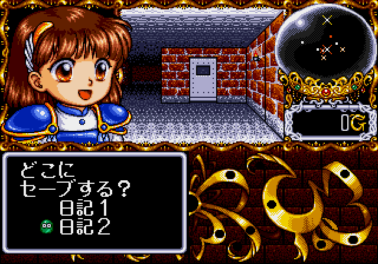
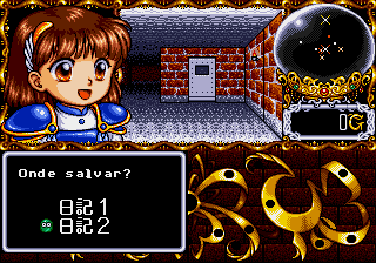
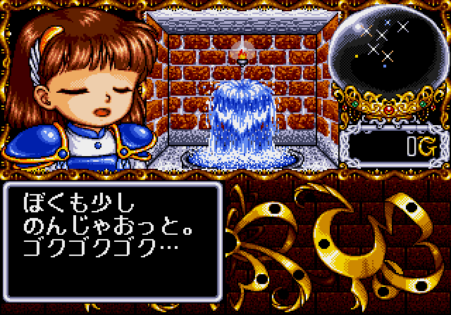
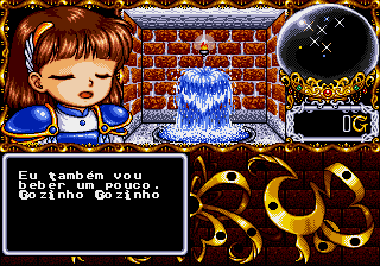

Pick a ROM, pick a language, play. Retro Translator learns each game's font by itself and translates its text while you play, inside the game's own screens.
Free · Windows 10/11 · one portable file · works offline · no ROM included


TRANSLATEDORIGINALNothing is prepared per game: Retro Translator works on games it has never seen.
Reads the letters each game draws, the way a code breaker would: from word frequencies and the order the font is stored in.
Text found in the ROM is rewritten in place, so menus and dialog keep the game's own font, colours and animations.
Kana and kanji are read from the screen, in 16x16 and 8x8 fonts, and translated by an offline neural model.
Everything runs on the CPU of your own computer. No internet, no account, no graphics card needed.
Nothing to install or extract. A new version cleans up what an older one learned, by itself.
Every change is tested against the original before you play; anything that would stop the game is left out.
The game's language is detected by itself. You choose the language to play in when the game opens.
GAMES IN
TRANSLATED INTO
Three steps for you. The rest happens on its own.


Built to grow: reading and translation are shared, and each new console only adds its emulator.
| CONSOLE | STATUS |
|---|---|
| Sega Mega Drive / Genesis | ● Available |
| More consoles | ○ Planned |
Yes. It may not be sold: the emulator core it uses forbids commercial use.
No ROM is included. Use backups of games you own.
Most sentences read well; some come out literal or wrong, and graphic text such as logos is not translated. Each version improves it.
No. Reading and translation run entirely on your computer.
Arrows for the D-pad, Z / X / C for A / B / C, Enter for Start, F1 to switch the translation on and off, Esc to quit.